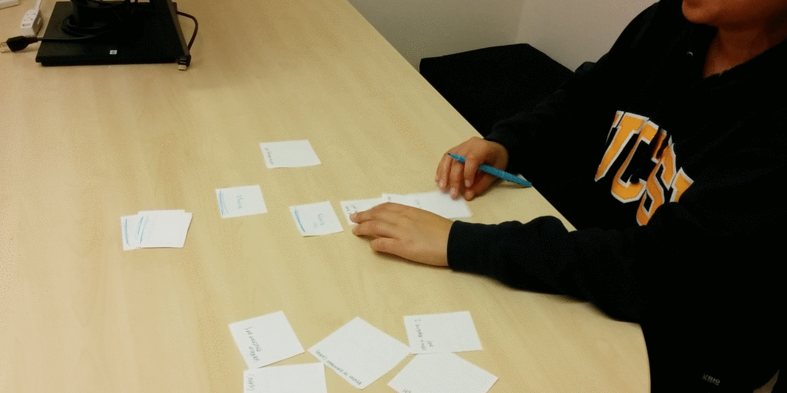

LEARNING EQUALITY
designing the content curation experience for teachers providing offline education to third world countries
Learning Equality is a non-profit that seeks to enable universal access to high quality open educational resources, and to create tools that empower communities to author and share their own content. Learning Equality is committed to enabling every person in the world to achieve a quality basic education. I interned here as a user experience design intern, and was part of process of designing the experience and interface of the content curation process, where teachers can add and share their own content to teach their students on this platform.
Sketches, Use Case Scenarios, User Research, Lo-Fi and Hi-Fi Prototypes


We conducted user research on Noemi from War Child Holland, who has no interface to curate her own content directly. Through our user research, we also found the distinction between :
Noemi mentioned that she was often unsure of how everything would fit together and would move her content around a lot. So based on user research, we decided to make the platform also catered to topic-driven curation style, which is why we created the workspace where users can dump their content in first.
Check out the interactive prototype created with InvisionApp! Follow the guided tours by pressing on the lighted blue circles.


Created with Axure
Qualitative User Research
The user starts with a bottom up method, by grabbing all the related content items related to one single item and grouping them together
The user ends up with a vertical hierarchy when she is done organizing things together, and clumps together everything that is related
For our 2nd iteration of user research, we used two different methods. The talk-out-loud method just included giving the prototype to our users and watching their pain points as they used the prototype. The parallel research method was the most interesting, because without any major influence from the designers, we gave them content on slips of paper to organize and group together, in order to watch how people usually organize content together. This method could give us a hint into the mental models a user has in doing an activity, and what they would naturally do and how they would think during the activity.
Here are some of our insights:
talk-out-loud method:
parallel research method:
We will be making the appropriate changes from user research to the design, which includes:
We hope to be able to code up this part of the project and continue iterating on the design!